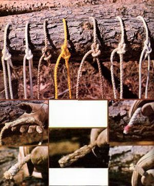

TOP PHOTO: Seven 3/8"" candidates, from left to right: three-strand nylon, braided nylon, three-strand polypropylene manila imitation, three-strand polypropylene, three-strand manila, three-strand sisal, and three-strand cotton. SECOND ROW LEFT: A short splice is wellsuited to the permanent joining of two natural fiber ropes that won't have to pass through a pulley. BOTTOM, LEFT: Sailors whipping follows the strand pattern of the rope. It's a good way to protect natural fiber ends. CENTER: A back splice will permanently protect the end of a natural rope but can be used only if you won't need to slip the line through a small restriction such as a pulley or eye, since the splice increases the end's diameter significantly. BOTTOM RIGHT: The ends of synthetic ropes can be melted to prevent unraveling. SECOND ROW RIGHT: Common whipping holds together the end of a length of cotton rope.